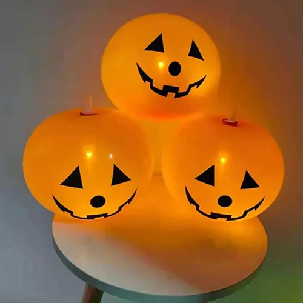
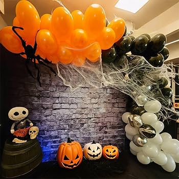
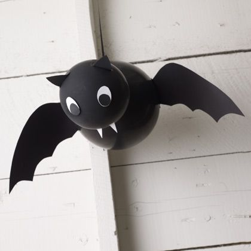
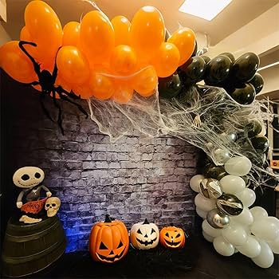
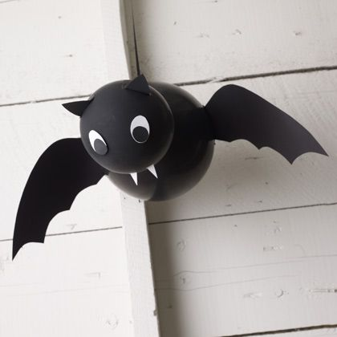

💡 Ideias de Decoração

Balões de Abóbora
Use balões laranja e desenhe rostos assustadores com caneta preta. Simples e divertido!
Balões Fantasmas
Balões brancos com olhos e bocas desenhados para um efeito fantasmagórico.
Assuste e encante seus convidados com decorações incríveis feitas com balões.
Ver IdeiasUse balões laranja e desenhe rostos assustadores com caneta preta. Simples e divertido!
Balões brancos com olhos e bocas desenhados para um efeito fantasmagórico.
 


